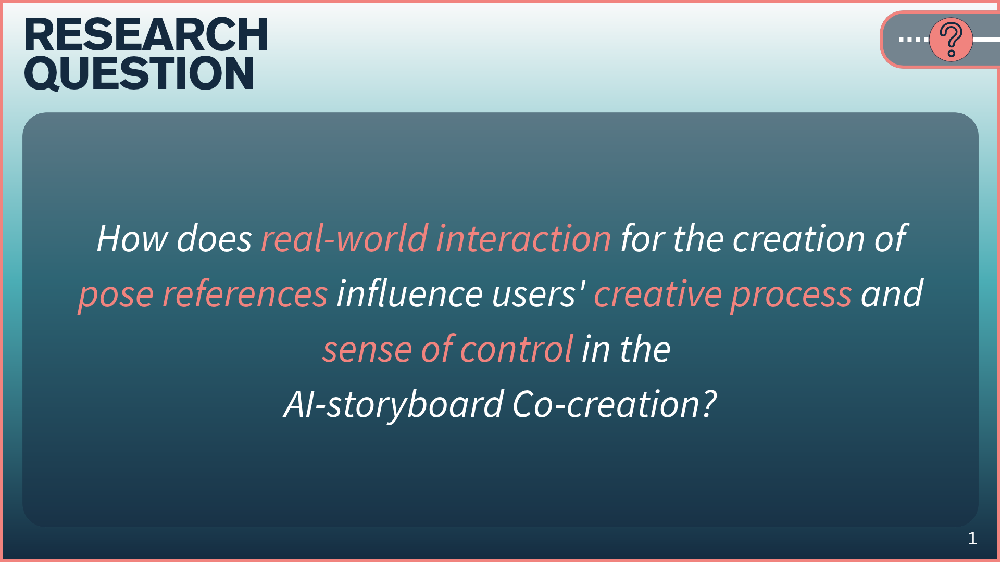
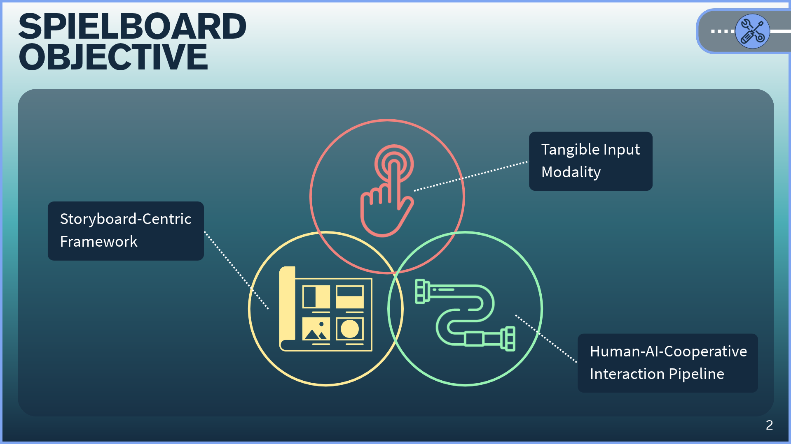
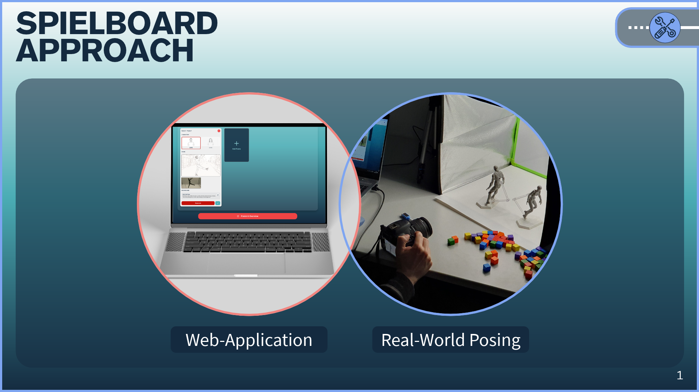
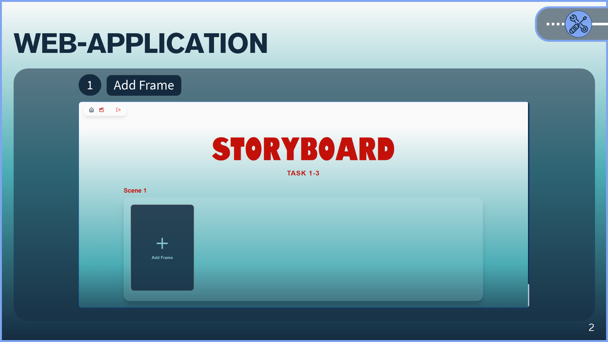
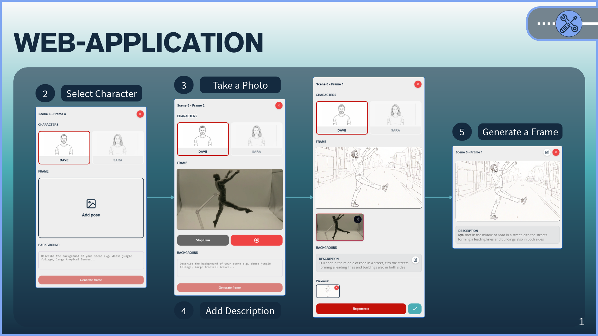
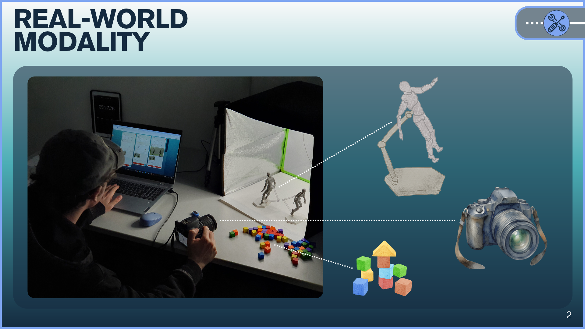
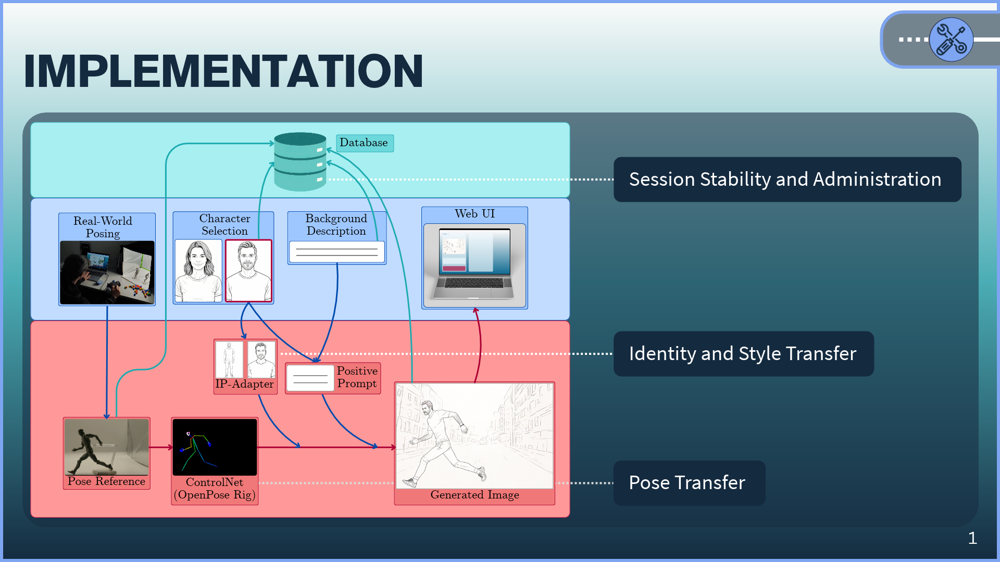
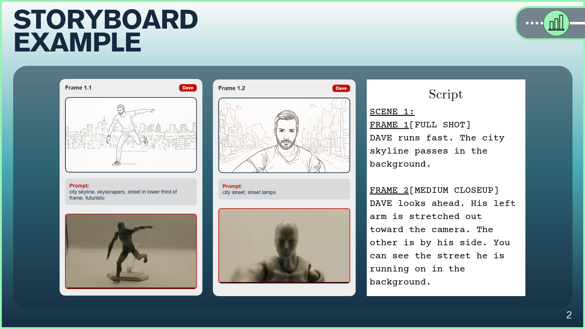
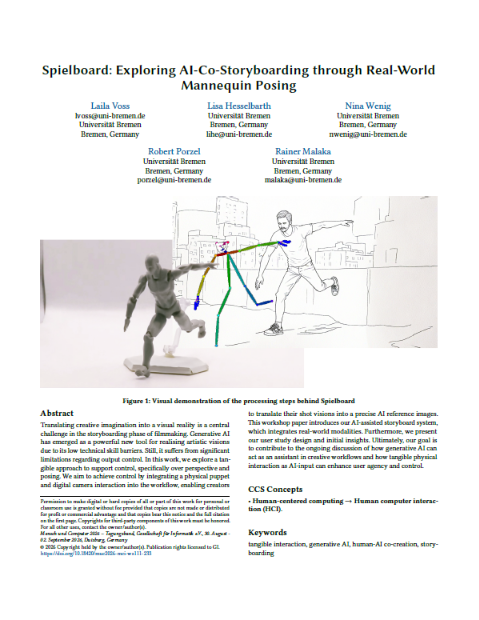

Erstellt 2026
Spielboard ist eine Webanwendung, die ich im Zuge meiner Bachelorarbeit entwickelt habe. Sie stellt die haptische Nutzung von Figuren und Gegenständen
in Kooperation mit KI zur Erstellung von Storyboards vor. Zur Untersuchung dieses kooperativen Ansatzes habe ich eine explorative Studie
entwickelt, durchgeführt und ausgewertet.
Übersicht








Publikation

Publikation ansehen